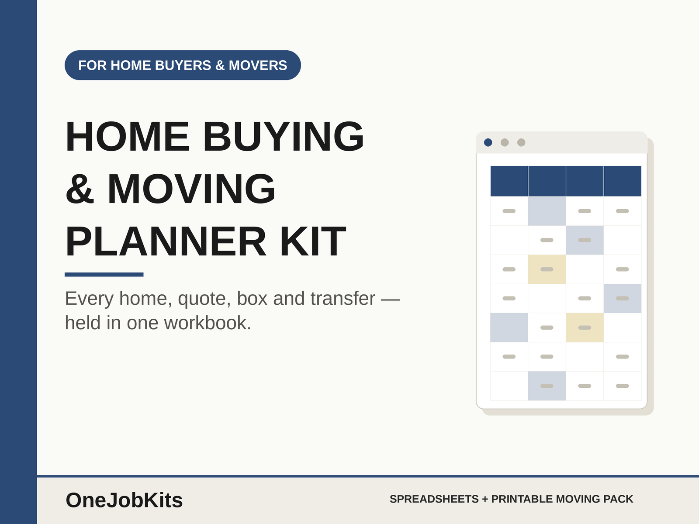

OneJobKits · Kit #25
Home Buying & Moving Planner Kit — first time home buyer binder

Buying a first home is exciting for about a day. Then the homes start to blur together, the closing-cost quotes arrive in different formats from different people, the moving countdown lives on sticky notes, and nobody can find the list of which utilities need transferring or which box the kettle went into. A good first time home buyer binder fixes that by putting the whole purchase and the whole move in one organised place, with the arithmetic done for you.
This page gives you the moving countdown part free: the Moving Checklist Starter. Below it is the full system it comes from — a workbook that compares the homes you view, totals the closing-cost figures you collect, counts down the move task by task, and keeps every box, transfer and household item on a list you can actually find again. It is an organiser and a calculator only. It works on figures you enter from your own listings, quotes and estimates, and it recommends no mortgage, no lender, no property and no price.
Free download — start with the Moving Checklist Starter
The FREE Moving Checklist Starter is a fillable PDF: a 4-week moving countdown, a box log and a transfers list — the checklist starter described on Gumroad as the 4-Week Countdown, Box Log and Transfers List. It covers the last four weeks before moving day in printable form, so you can start organising the move before you have chosen a workbook routine, pin the countdown where the packing is happening, and work through the transfers that are easiest to forget until the lights do not come on.
Download the free Moving Checklist Starter (PDF)Get it on Gumroad instead
What the free starter does not do: it does not compare homes, it does not total your closing costs or calculate your cash to close, and it remembers only the move itself. The full system below starts earlier — at the viewings — and runs through the purchase figures, the full eight-week timeline, sixty numbered boxes, thirty transfer rows and a sixty-item home inventory, with totals that calculate themselves.
What's inside the full system
- Buying and moving workbook (spreadsheet, 7 tabs; Excel + Google Sheets, no macros) — Start Here · Home Comparison — 20 homes side by side: asking price, beds and baths, square footage, price per square foot calculated, taxes and the monthly figures you collect, so a home you viewed three weeks ago is still comparable today · Closing Costs Calculator — 20 itemised lines for the quotes and fees you collect, with the total and your cash to close calculated from the purchase price, the costs and your deposit · Moving Timeline — 23 pre-written tasks running from 8 weeks out to moving week, with a Done count that keeps itself · Box Inventory — 60 numbered boxes with per-room counts, so unpacking starts from a list instead of a hunt · Utility Transfers — 30 rows with 16 services pre-listed, for account numbers, stop and start dates and deposits · Home Inventory — 60 items with purchase price and estimated value, and totals calculated
- Printable Moving Pack (fillable PDF, 7 pages, 366 fields) — the paper copy of the system for the kitchen counter and the moving van: move snapshot and key dates, house-hunting scorecard, closing costs on paper, the moving countdown, the box inventory, the utility and address-change checklist, and first-night essentials with handover notes
- Worked example files (Excel + Google Sheets) — the workbook filled in with a fictional family's complete purchase and move, so you can follow a finished example before you start your own (shown below)
- Setup Guide (PDF, 6 pages) — what is inside, setup for Excel and for Google Sheets, a tab-by-tab walkthrough, a tour of the worked example, the weekly rhythm during a purchase, paperwork habits, and printing
- Pro ($59) adds: the First-Year Home Ownership workbook pair (Excel + Google Sheets) — Maintenance Schedule (30 rows, with the next-due date calculating from the last-done date and the interval you set), Warranty and Appliance Records (30 rows, with warranty end dates), Contractor Contacts (25 rows, for the tradespeople you trust) and an Annual Cost Tracker (12 categories across 12 months, so the first year of owning the house has a real cost picture)
A filled example — so you can see the finished thing
The kit's worked example follows the fictional Patel family through a complete purchase and move. The Patels are invented, and the example file says so; what the file demonstrates is the system working end to end on one family's figures, from the first viewings to the last box:
| From the example file | What is filled in |
|---|---|
| Homes compared | 4 homes compared side by side on the Home Comparison tab — prices, sizes and the monthly figures the family collected, with price per square foot calculated for each |
| Closing costs | 20 closing-cost lines itemised, totalling $21,370 — the calculator's total, not a number typed over the top of the lines |
| Cash to close | $463,870 cash to close, calculated from the purchase price plus the $21,370 of closing costs minus the deposit the family had already paid |
| Moving Timeline | All 23 pre-written timeline tasks in place, running from 8 weeks out to moving week, so the countdown the family followed is visible task by task |
| Boxes and transfers | 16 boxes logged on the Box Inventory and 10 transfers logged on Utility Transfers — the move, recorded instead of remembered |
| Home Inventory | 12 inventory items recorded with their details — the start of the household record the full 60-item tab is built to hold |
That is the point of the example: before you trust the workbook with your own purchase, you can watch it carry somebody else's — fictional, labelled, and complete — from comparison to cash to close to the last transfer.
Who it is for
First-time buyers (and anyone buying while moving house at the same time) who are viewing several homes, collecting closing-cost quotes from several sources, and facing a move with dozens of boxes and a page of accounts to transfer — and who want all of it in one workbook and one printable pack instead of scattered notes, inbox threads and memory.
Who it is not for
Anyone looking for financial advice, legal advice, a mortgage or lender recommendation, or an opinion on which property to buy or what to offer. There is none in here, on purpose. Professionals advise; this kit organises the figures and the tasks around their advice, and it never replaces a lender, an attorney or an agent.
Questions buyers ask
- Does this kit tell me which home to buy or what to offer?
- No — never. It compares the homes you view side by side and calculates from the figures you enter, but it recommends no property, no price and no offer. The comparison tab holds your own score and your own notes; the decision stays yours, with your agent and lender advising you.
- How does the Closing Costs Calculator work?
- You enter the purchase price and your deposit once, then itemise the closing-cost quotes and fees you collect across 20 lines. The sheet totals the lines itself and calculates your cash to close from the price plus the costs minus the deposit. In the worked example, 20 lines total 21,370 dollars and the cash to close calculates to 463,870 dollars.
- What is already written in the Moving Timeline?
- The timeline ships with 23 pre-written tasks running from 8 weeks out to moving week, each with a place to mark it done, and the sheet counts completed tasks automatically. You delete tasks that do not apply to your move and add your own in the same list, so the countdown reflects your move rather than a generic one.
- Excel or Google Sheets, and are there macros?
- Both. The workbook comes as an Excel file and as a Google Sheets version with the same 7 tabs and the same formulas, and there are no macros in either version. The printable pack is a fillable PDF, so the paper side works even if you never open a spreadsheet.
- What does Pro add?
- Pro adds the First-Year Home Ownership workbook pair, in Excel and Google Sheets: a Maintenance Schedule with 30 rows and next-due dates that calculate, Warranty and Appliance Records with 30 rows, Contractor Contacts with 25 rows, and an Annual Cost Tracker covering 12 categories across 12 months. It is for the year after the move, once the boxes are gone.
- How many homes, boxes and transfers can I track?
- The Home Comparison tab holds 20 homes side by side, the Box Inventory holds 60 numbered boxes with per-room counts, Utility Transfers holds 30 rows with 16 common services pre-listed, and the Home Inventory holds 60 items with totals. Those are the row counts built into the files as delivered.
- What does the free starter cover, and what does the full kit add?
- The free Moving Checklist Starter is a fillable PDF covering the last 4 weeks: a moving countdown, a box log and a transfers list. The full kit starts at the viewings — 20 homes compared, 20 closing-cost lines totalled, cash to close calculated, a 23-task timeline from 8 weeks out, 60 boxes, 30 transfer rows and a 60-item home inventory — plus the 7-page printable pack and the setup guide.
Prices
Base: $39 · Pro (adds the First-Year Home Ownership workbook pair): $59 — one-time payment, digital download. No subscription; the files are yours.
Can't find the kit you need?
We build it. Ask us — first asker gets it at half the shelf price. Tell us the job at onejobkits.com and we will build the kit for it.
Related kits
Please know: this is an organiser and calculator only — not financial or legal advice. It recommends no mortgage, lender, property or price, and every number in the system is a figure you enter from your own quotes, listings and estimates. Take financial and legal questions to qualified professionals. All example data is fictional (the Patel family is invented, and the example file says so).